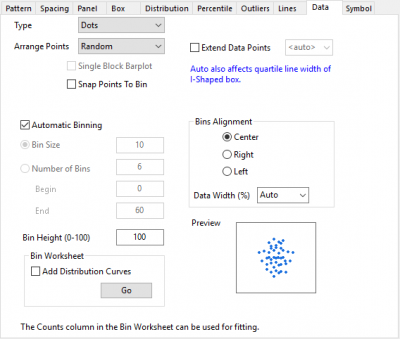
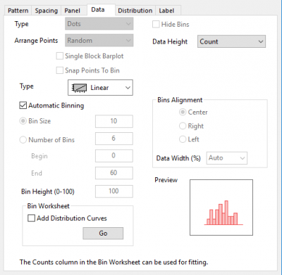
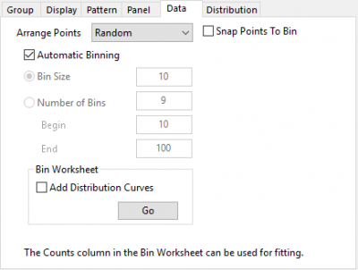
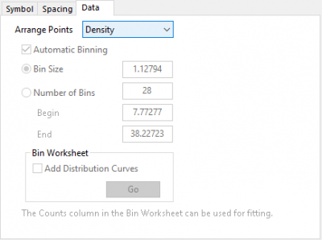
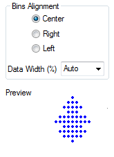
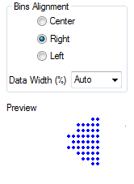
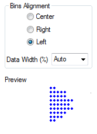

Es gibt Bedienelemente auf der Registerkarte Abstände des Dialogs Details Zeichnung zum Einstellen des Versatzes von Datensymbolen (Punkten), wenn diese in Ihren Boxdiagrammen angezeigt werden.
Die Registerkarte Daten ist verfügbar, wenn:
oder
 |
 |
Registerkarte Daten für Boxdiagramm, Punkt-Säulendiagramm, Violindiagramm oder Beeswarm-Diagramm |
Registerkarte Daten für Histogramm |
 |
 |
Registerkarte Daten für Ridgeline-Diagramm |
Registerkarte Daten für Punktdiagramm |
Diese Gruppe von Einstellungen ist nur verfügbar, wenn das Quelldiagramm ein Boxdiagramm, das eingeteilte Daten anzeigt, ein Punkt-Säulendiagramm oder ein Beeswarm-Diagramm ist.
Wählen Sie Punkte, Klassenbalken oder Punkte + Klassenbalken in der Auswahlliste Typ.
Wenn Typ Punkte ist, sind diese sechs Optionen verfügbar: Zufällig, Jitter, Schwarm, Zentrum, Hex, Quadrat, Dichte und Sich überschneidender Versatz.
Wenn der Typ Punkte + Klassenbalken ist, werden diese drei Optionen sind verfügbar: Zufall, Jitter, Schwarm und Sich überschneidender Versatz.
Der zufällige Versatz in X-Richtung wird gemäß einer Normalverteilung bestimmt.
Wählen Sie Jitter, um Zufallsrauschen in X-Richtung hinzuzufügen und damit die Datenpunktreihen zu streuen. Dies erzeugt zufällige verteilte Jitterpunkte. In der Gruppe Klassenausrichtung können Sie gleichmäßig verteilte Jitterpunkte erzeugen und benutzerdefiniert anpassen.
Die Auswahl von Schwarm ist ähnlich der Auswahl von Jitter außer, dass sie die Klasseneinstellungen ignoriert.
Wählen Sie Sich überschneidender Versatz, um die sich übeschneidenden Datenpunkte nur mit dem gleichen Wert zu versetzen.
Es gibt Bedienelemente auf der Registerkarte Abstände des Dialogs Details Zeichnung zum Einstellen des Versatzes von Datensymbolen (Punkten), wenn diese in Ihren Boxdiagrammen angezeigt werden. |
| Hinweis: Für Ridgeline-Diagramme werden alle Punkte vertikal, entlang der Y-Achse angeordnet. |
Es gibt zwei Modi, um Punkte im Punktdiagramm anzuordnen:
Hinweis: Wenn die maximale Anzahl der Klassen (Einteilungen) größer ist als (Layerhöhe/Symbolgröße), reduziert Origin die Anzahl der Punkte durch N, um sicherzustellen, dass es kleiner ist als (Layerhöhe/Symbolgröße). Wenn es mehrere Zeichnungen gibt, ermittelt Origin die Summe (maximale Anzahl der Klassen aus jeder Zeichnung). Dieser N-Wert kann durch die Notation $(N) ermittelt werden.
Wenn es mehrere Zeichnungen gibt, ist der Abstand der Basislinie von jeder Zeichnung unterschiedlich, wobei das Verhältnis auf Grundlage der maximalen Anzahl der Klassen in jeder Zeichnung berechnet wird.
Wenn Typ = Klassenbalken oder Punkte + Klassenbalken, ist die Option Balkendiagramm mit Einzelblock verfügbar. Das Aktivieren des Kontrollkästchens Balkendiagramm mit Einzelblock kann die Linien zwischen den Klassen entfernen.
(Die Klassen werden hier links ausgerichtet gezeigt.)
Aktivieren Sie das Kontrollkästchen Punkte an Klasse ausrichten, um eingeteilte Datenpunkte horizontal in den Einteilungen auszurichten. Beachten Sie, wenn Typ gleich Punkte ist, dass diese Option nur verfügbar ist, wenn Zufall auf Punkte anordnen gesetzt ist.

| Hinweis: Für Ridgeline-Diagramme werden alle Punkte vertikal, entlang der Y-Achse angeordnet. |
Wenn der Datenpunkt oder die Quartillinien gezeigt werden, werden diese Datenstreifen oder kurzen Linien innerhalb der Verteilungskurven oder die Prozent der Boxbreite erweitert.
Wenn der Kurventyp nicht Kein ist und Symmetrische Verteilungskurve zeigen auf der Registerkarte Verteilung aktiviert ist, bedeutet <Auto>, dass die Datenpunkte innerhalb der Verteilungskurve erweitert werden. Ansonsten bedeutet <Auto> 100 % der Boxbreite.
Wenn Kurventyp nicht Kein ist und Symmetrische Verteilungskurve zeigen auf der Registerkarte Verteilung aktiviert ist, wendet <Auto> nur die Verteilungskurve mit Regelbreite an und das auch nur auf die Elemente auf der gleichen Seite der Verteilungskurve. Die Elemente auf der anderen Seite werden nicht erweitert.
Nur für Histogramm verfügbar:
Um Achsenskalierungen zu modifizieren, siehe Die Bedienelemente der Registerkarte Skalierung im Dialog Achsen.
In der Auswahlliste Typ können Sie einen von drei Skalierungstypen auswählen, um die Einteilungen zu berechnen und zu teilen: Linear, Log10, Log2 und Ln.
Wenn Sie Log10/Log2/Ln zum Teilen der Einteilungen gewählt haben, wird die Skalierung der X-Achse des Histogramms auf log10/log2/ln gesetzt.
Standardmäßig ist Auto für Einteilung ausgewählt. Sie können Automatisch nur Min./Max. oder Benutzerdefiniert auswählen, um die Klasseneinteilung benutzerdefiniert anzupassen.
Sie können die verbundenen Textfelder, Einteilungsgröße, Anzahl der Einteilungen, Anfang und Ende, bearbeiten.
Anzahl der Einteilungen = (Anfang-Ende) / Klassenbreite
Die Option unter der Auswahlliste Klasseneinteilung wird verwendet, um festzulegen, wie die Klassen eingeteilt werden. Wenn Sie Nach Inkrement auswählen, können Sie einen festen Wert für die Klassen im Textfeld Einteilungsgröße eingeben. Wenn Sie Nach Intervall auswählen, wird das Textfeld Anzahl der Einteilungen bearbeitbar.
Modus Automatische Einteilung: Origin sucht das Minimum (minimaler Wert), Maximum (maximaler Wert) und Anzahl (Datengröße) im Datensatz. Es berechnet dann erneut Minimum, Maximum, Einteilung (Klasse) und Größe aus den untenstehenden Gleichungen. bins = int(4*log(count))+1; size = int((max - min)/bins)+1; min = size * int(min/size) - size; max = size * int(max/size) + size; |
Legt die Höhe jeder Einteilung fest. Dieses Textfeld ist nur verfügbar, wenn die Quellzeichnung ein Boxdiagramm ist, das eingeteilte Daten anzeigt. Da die Klassen auf den Seiten angezeigt werden, entspricht dieser Wert der Breite der Datenpunktanzeige.
Diese Gruppe von Einstellungen ist nur verfügbar, wenn die Quellzeichnung ein Boxdiagramm ist, das eingeteilte Daten anzeigt.
 |
 |
 |
Im Kombinationsfeld ausgewählter oder eingegebener Faktor zum Festlegen der Datenbreite Dies ist ein Prozentsatz. Es sind nur Werte von 0 bis 100 zugelassen.
Hinweis:
|
Wählen Sie Verteilungskurven hinzufügen, um Verteilungskurvendaten zum Klassifizierungsblatt hinzuzufügen. Wenn Sie auf die Schaltfläche Los klicken, wird eine Arbeitsmappe Bin erstellt, die die berechneten Mengen der Klassen enthält, und der Dialog Details Zeichnung wird geschlossen.